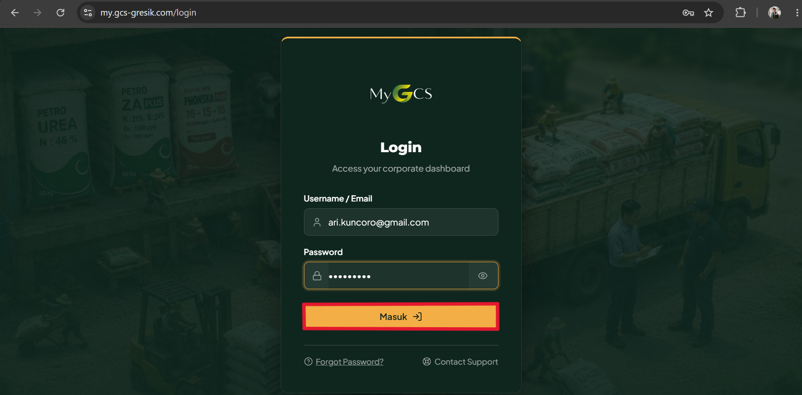
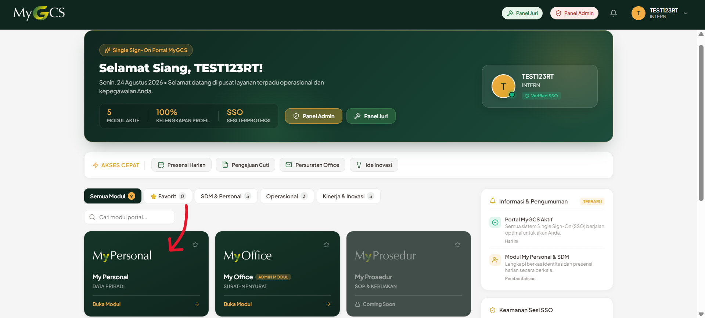
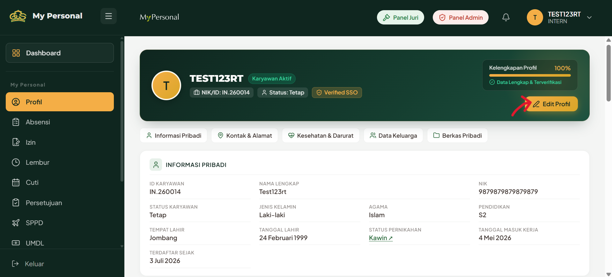
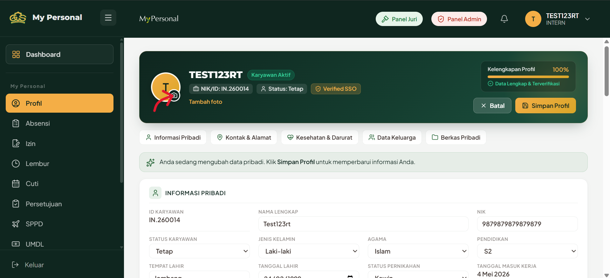
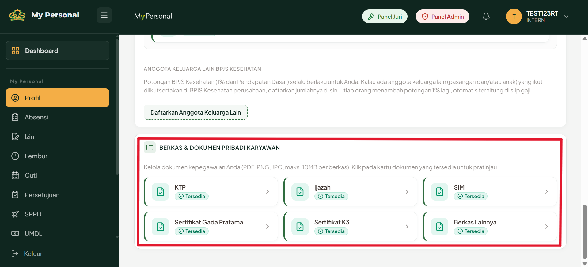
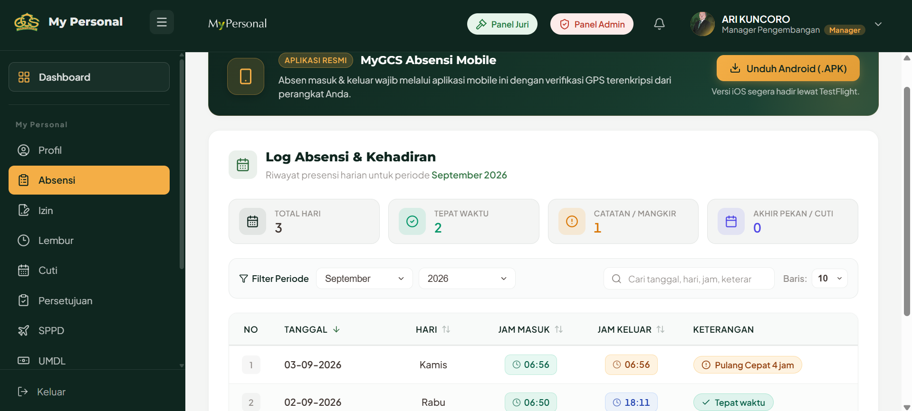
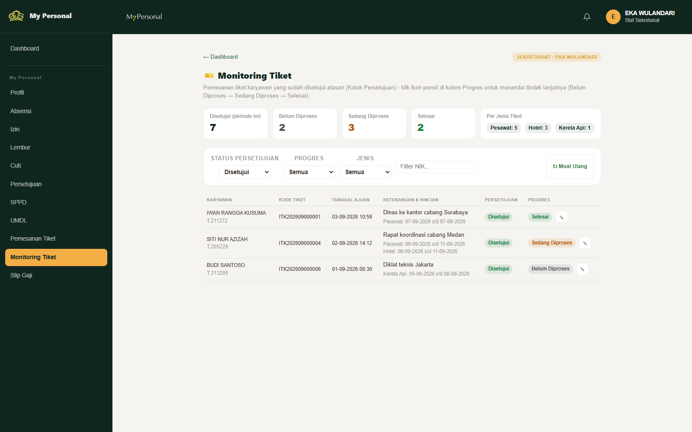

GRESIK CIPTA SEJAHTERA
MyGCS — Single Sign-On Portal
USER MANUAL
My Personal
Panduan lengkap penggunaan modul My Personal — Profil, Absensi, Izin, Lembur, Cuti,
Persetujuan, SPPD, UMDL, Pemesanan Tiket, dan Monitoring Tiket untuk staf Sekretariat —
pintu masuk data & layanan kepegawaian setiap karyawan di portal MyGCS.
i Dokumen User Manual
Lembar Informasi Dokumen & Proyek
| Nama Dokumen | User Manual My Personal — MyGCS |
| Nama Proyek | MyGCS — Single Sign-On Portal PT Gresik Cipta Sejahtera |
| Modul Dicakup | My Personal > Profil, Absensi, Izin, Lembur, Cuti, Persetujuan, SPPD, UMDL,
Pemesanan Tiket, dan Monitoring Tiket (khusus staf Sekretariat) |
| Tahun | 2026 |
| BPO / Related Unit Kerja | Departemen Sumber Daya Manusia |
| Versi Dokumen | 2.0 — revisi dari versi 1.0 (24 Agustus 2026): menambahkan seluruh modul
pengajuan (Absensi s/d Pemesanan Tiket) dan fitur Monitoring Tiket untuk staf Sekretariat |
| Pemilik Dokumen | Tim IT GCS |
| Tanggal Terbit | 3 September 2026 |
ii Riwayat Revisi
| Versi 1.0 — 24 Agu 2026 | Rilis awal: Login & My Personal > Profil. |
| Versi 2.0 — 3 Sep 2026 | Menambahkan panduan Absensi, Izin, Lembur, Cuti, Persetujuan
(Kotak Persetujuan atasan), SPPD, UMDL, Pemesanan Tiket, dan Monitoring Tiket (peran baru staf Sekretariat). |
≡ Daftar Isi
- A. Deskripsi Umum....................4
- B. Manfaat Project....................4
- C. Fitur Project....................4
- D. User Project....................5
- E. Panduan Project....................5
- Login Page — Login menggunakan User EASy6
- My Personal > Profil7
- My Personal > Absensi10
- My Personal > Izin11
- My Personal > Lembur (SPL)12
- My Personal > Cuti13
- My Personal > Persetujuan (Kotak Persetujuan)15
- My Personal > SPPD16
- My Personal > UMDL18
- My Personal > Pemesanan Tiket20
- Untuk Staf Sekretariat: Monitoring Tiket21
- F. Penutup....................22
A Deskripsi Umum
MyGCS merupakan portal Single Sign-On (SSO) terpadu yang dikembangkan oleh PT Gresik Cipta Sejahtera
untuk menyatukan seluruh layanan operasional dan kepegawaian karyawan dalam satu pintu akses. Modul
My Personal adalah ruang bagi setiap karyawan untuk mengelola data pribadinya sendiri sekaligus
mengajukan berbagai permohonan kepegawaian — biodata, Absensi, Izin, Lembur, Cuti, SPPD, UMDL, hingga
Pemesanan Tiket — dan bagi atasan untuk memberi persetujuan atas pengajuan tim lewat Kotak Persetujuan.
Sistem berbasis web, dapat diakses lewat jaringan internal maupun eksternal pada alamat
my.gcs-gresik.com, menggunakan akun Single Sign-On yang sama dengan akun EASy. Direkomendasikan
diakses menggunakan browser Chrome.
B Manfaat Project
1
Karyawan memiliki satu profil digital resmi yang menjadi rujukan seluruh modul MyGCS — Absensi, Izin, Lembur, Cuti, SPPD, UMDL, Pemesanan Tiket, dan Slip Gaji.
2
Seluruh pengajuan (Izin, Lembur, Cuti, SPPD, UMDL, Tiket) tercatat dalam satu alur persetujuan terpadu — atasan cukup membuka satu Kotak Persetujuan untuk memutuskan seluruh pengajuan timnya.
3
Pengajuan dinas luar (SPPD/UMDL) otomatis dipilah berdasarkan jarak tempuh, lengkap dengan bukti foto lokasi ber-GPS — mengurangi risiko pengajuan fiktif.
4
Tim Sekretariat memiliki halaman khusus untuk memantau seluruh pemesanan tiket karyawan yang sudah disetujui atasan, sehingga tindak lanjut pemesanan ke agen/maskapai tidak tercecer.
C Fitur Project
Fitur yang tercakup dalam dokumen ini:
1
Login Page (Single Sign-On menggunakan akun EASy)
2
My Personal > Profil — biodata, kontak & alamat, kesehatan & darurat, data keluarga, berkas pribadi, dan foto profil
3
Absensi — riwayat presensi harian, terhubung dengan aplikasi mobile MyGCS Absensi
4
Izin — pengajuan surat izin (datang terlambat, meninggalkan pekerjaan, sakit, dinas, dsb.)
5
Lembur (SPL) — pengajuan Surat Perintah Lembur (biasa, mengganti, crash program)
6
Cuti — saldo & pengajuan cuti tahunan, cuti bersama, dan cuti nasional/hari libur
7
Persetujuan — Kotak Persetujuan bagi atasan/manager untuk memutuskan pengajuan tim
8
SPPD — Surat Perintah Perjalanan Dinas untuk jarak jauh (>150 km PP)
9
UMDL — Uang Muka Dinas Luar untuk jarak dekat (<150 km PP)
10
Pemesanan Tiket — pengajuan tiket & akomodasi (Pesawat, Kereta Api, Bus, Kapal Laut, Hotel)
11
Monitoring Tiket — khusus staf Sekretariat, memantau tindak lanjut tiket yang sudah disetujui
D User Project
Seluruh karyawan pemegang akun EASy aktif dapat mengakses MyGCS sebagai Karyawan (User) untuk
mengelola profil dan mengajukan permohonan kepegawaian miliknya sendiri. Beberapa peran tambahan
berlaku sesuai jabatan/penunjukan berikut:
Karyawan (User)
Seluruh pemegang akun EASy aktif — mengelola profil & mengajukan Absensi, Izin, Lembur, Cuti, SPPD, UMDL, dan Pemesanan Tiket miliknya sendiri.
Atasan / Manager
Otomatis aktif bagi siapa pun yang punya bawahan di Struktur Organisasi — memutuskan pengajuan tim lewat Persetujuan (Kotak Persetujuan).
Staf Sekretariat Peran Baru
Ditunjuk Admin IT (mis. Eka, Farcha) — akses tambahan ke halaman Monitoring Tiket untuk memantau seluruh pemesanan tiket karyawan yang sudah disetujui atasan.
Admin Modul SDM / Admin IT
Konfigurasi lanjutan (tarif, komponen gaji, verifikasi dinas, dsb.) — dibahas di dokumen User Manual Admin SDM terpisah.
E Panduan Project
Bagian berikut menjelaskan langkah demi langkah penggunaan setiap fitur di atas, dimulai dari
Login Page dan modul My Personal > Profil, dilanjutkan dengan modul-modul pengajuan lainnya.
1 Login Page
A. Login (Menggunakan User EASy)
Karyawan masuk ke portal MyGCS menggunakan akun EASy yang sudah dimiliki — tidak perlu membuat akun baru.
1
Buka portal MyGCS pada peramban (disarankan Chrome) di alamat my.gcs-gresik.com/login.
2
Masukkan Username/Email dan Password — gunakan data yang sama dengan akun EASy Anda.
3
Klik tombol Masuk. Jika lupa kata sandi, gunakan pranala Forgot Password? pada halaman yang sama.
4
Jika berhasil, Anda akan diarahkan langsung ke halaman Beranda (Dashboard) MyGCS.

Halaman Login MyGCS — alamat my.gcs-gresik.com/login.
2 My Personal > Profil
Pada modul ini karyawan mengelola profil pribadinya sendiri.
1
Dari halaman Beranda, tekan kartu modul My Personal pada daftar Semua Modul, lalu klik Buka Modul.

Beranda MyGCS — tekan kartu modul My Personal untuk masuk.
2
Anda masuk ke halaman Profil. Perhatikan kotak Kelengkapan Profil di kartu identitas — persentase kelengkapan biodata & dokumen dasar (KTP, KK, Ijazah, Buku Nikah bila Kawin). Gunakan tab Berkas Pribadi untuk memeriksa satu per satu.
Halaman Profil — kartu identitas menampilkan persentase Kelengkapan Profil.
3
Cek foto profil pada avatar kartu identitas. Klik Edit Profil untuk memperbaiki data maupun foto.

Klik tombol Edit Profil di kanan atas kartu identitas untuk mulai mengubah data, termasuk foto.
4
Dalam mode edit, klik ikon kamera pada avatar atau pranala Tambah foto, lalu pilih berkas (JPG/PNG). Foto otomatis dipangkas melingkar sebelum diunggah.

Mode edit — klik ikon kamera pada avatar untuk mengunggah foto baru.
5
Periksa kembali data yang diubah, klik Simpan Profil di kanan atas — atau Batal bila ingin membatalkan. Data & foto baru langsung tampil di seluruh bagian portal yang menampilkan identitas Anda.

Tab Berkas Pribadi — status setiap dokumen (Tersedia / Belum Tersedia) dapat dicek di sini.
3 My Personal > Absensi
Menampilkan riwayat presensi harian Anda. Absen masuk & keluar dilakukan lewat
aplikasi MyGCS Absensi Mobile (Android, verifikasi GPS terenkripsi & anti fake-GPS) — halaman web ini
murni untuk melihat riwayat, bukan untuk absen langsung.
1
Klik menu Absensi pada sidebar My Personal. Bila Anda belum memasang aplikasi, unduh lewat tombol Unduh Android (.APK) pada banner di bagian atas halaman.
2
Empat kartu ringkasan menampilkan Total Hari, Tepat Waktu, Catatan/Mangkir, dan Akhir Pekan/Cuti untuk periode yang dipilih.
3
Gunakan Filter Periode (bulan & tahun) atau kotak pencarian untuk menemukan tanggal tertentu. Setiap baris menampilkan jam masuk/keluar dan keterangan (mis. "Pulang Cepat", "Tepat waktu").
Catatan: aplikasi mobile menolak absen bila mendeteksi mock location (fake-GPS) — pertahanan dobel dilakukan di sisi aplikasi maupun server.

Log Absensi & Kehadiran — riwayat presensi harian per periode, lengkap dengan banner unduh aplikasi mobile.
4 My Personal > Izin
Pengajuan dan riwayat surat izin kerja (datang terlambat, meninggalkan pekerjaan, sakit, dinas, atau keperluan pribadi).
1
Klik menu Izin. Tab Di Buat (Draft) menampilkan izin yang masih bisa diubah/dihapus; tab Persetujuan menampilkan izin yang sudah diputuskan atasan.
2
Klik + Ajukan Izin Baru. Isi Tgl/Jam Mulai & Selesai, pilih Jenis Izin dan Kepentingan (Pribadi/Dinas), lalu tulis Keterangan Alasan.

Formulir Ajukan Surat Izin Baru.
3
Klik Ajukan Permohonan — izin masuk ke Kotak Persetujuan atasan Anda. Izin yang masih berstatus Di Buat boleh diedit (ikon pensil) atau dihapus (ikon tempat sampah).
Untuk izin jenis "Dinas": izin ini menjadi dasar rujukan saat mengajukan UMDL — lihat bagian UMDL pada halaman selanjutnya.

Permohonan Surat Izin — daftar & ringkasan status pengajuan.
5 My Personal > Lembur (SPL)
Pengajuan dan riwayat Surat Perintah Lembur — jenis Biasa, Mengganti, atau Crash Program.
1
Klik menu Lembur, lalu klik + Ajukan SPL Baru.
2
Isi Mulai/Sampai Tgl dan Jam Mulai/Selesai, pilih Jenis Lembur (SPL), lalu tulis Keterangan Tugas Lembur secara rinci.

Formulir Ajukan Surat Perintah Lembur.
3
Klik Ajukan SPL — pengajuan masuk ke Kotak Persetujuan atasan Anda. Nominal lembur dihitung otomatis oleh Admin SDM berdasarkan jam yang disetujui.

Surat Perintah Lembur (SPL) — daftar & ringkasan status pengajuan.
6 My Personal > Cuti
Saldo dan pengajuan cuti tahunan Anda, beserta daftar cuti bersama & cuti nasional/hari libur perusahaan.
1
Klik menu Cuti. Kartu hijau di bagian atas menampilkan Sisa Saldo Cuti Tahunan — akrual 24 hari tiap 2 tahun sekali di TMT Anda, dikurangi cuti bersama yang "mengurangi hak", batas akumulasi maksimal 24 hari.

Cuti Tahunan & Hari Libur — saldo cuti dan daftar Pengajuan Saya.
2
Klik + Ajukan Cuti untuk mengajukan cuti baru — isi rentang tanggal dan keterangan, lalu kirim untuk disetujui atasan.
3
Gulir ke bawah untuk melihat Cuti Bersama — setiap tanggal ditandai "mengurangi hak" atau "tidak mengurangi" sisa saldo cuti tahunan Anda.

Daftar Cuti Bersama — status pengurangan hak cuti tahunan per tanggal.
4
Bagian paling bawah menampilkan Cuti Nasional / Hari Libur — daftar resmi tanggal merah yang tidak memotong saldo cuti Anda.

Cuti Nasional / Hari Libur — referensi tanggal merah perusahaan.
7 My Personal > Persetujuan
Kotak Persetujuan terpadu bagi atasan/manager — satu tempat untuk memutuskan
seluruh pengajuan tim: Cuti, Izin, Lembur, SPPD, UMDL, dan Tiket. Menu ini hanya berisi data bila Anda
memiliki bawahan di Struktur Organisasi.
1
Klik menu Persetujuan. Tab Menunggu Persetujuan menampilkan pengajuan tim yang perlu diputuskan; tab Riwayat Keputusan menampilkan yang sudah Anda proses.

Kotak Persetujuan — daftar pengajuan tim menunggu keputusan, ditandai label jenis (UMDL, SPPD, dst.).
2
Klik Detail pada satu baris untuk melihat rincian pemohon, jabatan, ringkasan/keterangan, dan (khusus SPPD/UMDL) rentang jarak & foto bukti lokasi dinas.
3
Tuliskan Catatan/Komentar (opsional), lalu klik Setujui Pengajuan atau Tolak Pengajuan. Bisa juga langsung klik tombol Setujui/Tolak pada baris tanpa membuka detail.

Detail Pengajuan UMDL — rentang jarak, foto bukti dinas, dan kolom catatan sebelum diputuskan.
Atasan langsung (bukan manager langsung): tetap dapat membuka detail untuk meninjau, namun tombol Setujui/Tolak hanya aktif bagi manager yang berwenang memutuskan.
8 My Personal > SPPD
Surat Perintah Perjalanan Dinas — untuk perjalanan dinas jarak jauh
(lebih dari 150 km PP), lengkap dengan alokasi tim peserta dan cetak surat dinas resmi.
1
Klik menu SPPD, lalu klik + Ajukan SPPD Baru.
2
Isi Tanggal Berangkat/Pulang, Cakupan Lokasi (Dalam/Luar Negeri), Transportasi, Tujuan Lokasi SPPD, dan Keterangan Tugas/Keperluan.

Formulir Ajukan SPPD Baru — sistem mengingatkan batas jarak (>150 km PP), di bawahnya diarahkan ke UMDL.
3
Unggah Foto Bukti Lokasi Dinas (wajib, diambil langsung lewat kamera perangkat — bukan galeri) sebelum mengirim pengajuan.
4
Setelah SPPD disetujui manager, klik ikon Kelola Tim (centang) pada baris SPPD untuk menambahkan Ketua & Anggota tim yang ikut dalam perjalanan dinas tersebut.

Kelola Tim SPPD — menambahkan Ketua/Anggota peserta perjalanan dinas.
5
Gunakan ikon pensil untuk mengubah, atau ikon cetak pada pengajuan yang sudah disetujui untuk mencetak Surat Perintah Perjalanan Dinas resmi ber-QR.

Surat Perintah Perjalanan Dinas (SPPD) — daftar & ringkasan status pengajuan.
9 My Personal > UMDL
Uang Muka Dinas Luar — untuk perjalanan dinas jarak dekat
(kurang dari 150 km PP), mencakup uang makan & akomodasi, alokasi tim, dan bukti foto dinas.
1
Klik menu UMDL, lalu klik + Ajukan UMDL Baru.
2
Pilih Surat Izin Terkait (izin jenis "Dinas" yang sudah Anda ajukan sebelumnya di menu Izin), isi Tanggal Dinas, pilih Rentang Jarak (KM) — <75 km atau 75–150 km (PP) — dan tulis Keterangan Dinas.

Formulir Ajukan UMDL Baru — wajib menautkan Surat Izin Terkait & memilih rentang jarak.
3
Ambil Foto Bukti Lokasi Dinas langsung lewat kamera (tombol Switch untuk berganti kamera depan/belakang) — lokasi GPS terekam otomatis pada foto.
4
Setelah disetujui, gunakan ikon Kelola Tim untuk mendaftarkan Ketua/Anggota bila UMDL diajukan atas nama tim.

Kelola Tim UMDL — menambahkan Ketua/Anggota peserta dinas luar.
Rumus nominal (dihitung otomatis Admin SDM saat penggajian): jarak <75 km = flat Rp40.000; jarak 75–150 km (PP) = 20% dari tarif SPPD Band pegawai. Nominal ini muncul di Slip Gaji Anda pada kelompok Tunjangan Tidak Tetap sebagai "Uang Makan Dinas".

Uang Muka Dinas Luar (UMDL) — daftar & ringkasan status pengajuan.
10 My Personal > Pemesanan Tiket
Pengajuan pemesanan tiket transportasi dinas (Pesawat, Kereta Api, Bus, Kapal Laut) dan akomodasi hotel.
1
Klik menu Pemesanan Tiket, lalu klik + Pesan Tiket Baru dan isi Keterangan singkat keperluan pemesanan.
2
Buka pengajuan yang baru dibuat, klik ikon Rincian (centang) untuk menambahkan satu atau lebih baris rincian: pilih Jenis Tiket/Akomodasi, Tanggal IN/OUT, dan Keterangan Rute/Nama Hotel.

Rincian Tiket & Akomodasi — boleh menambahkan beberapa baris (pesawat pergi-pulang, hotel, dsb.) dalam satu pengajuan.
3
Klik Tambah Rincian Tiket untuk setiap kebutuhan, lalu Selesai & Tutup. Kirim pengajuan untuk diproses persetujuan atasan.
4
Setelah disetujui, pengajuan pindah ke tab Persetujuan — dan otomatis masuk ke pantauan tim Sekretariat untuk ditindaklanjuti pemesanannya (lihat halaman berikut).

Pemesanan Tiket & Hotel — daftar & ringkasan status pengajuan.
11 Untuk Staf Sekretariat: Monitoring Tiket Peran Baru
Staf Sekretariat adalah pihak yang mengurus kebutuhan pemesanan tiket & akomodasi seluruh karyawan.
Menu Monitoring Tiket hanya muncul di sidebar My Personal bagi akun yang sudah ditandai Admin IT
dengan peran ini (mis. Eka, Farcha) — memberi mereka satu halaman untuk memantau seluruh pemesanan
tiket karyawan setelah disetujui atasan, tanpa perlu mengecek satu per satu akun karyawan.
Alur: karyawan mengajukan Pemesanan Tiket → atasan/manager menyetujui lewat Kotak
Persetujuan → pengajuan otomatis muncul di Monitoring Tiket → staf Sekretariat menindaklanjuti pemesanan
ke agen/maskapai & menandai progresnya di sini.
1
Kartu ringkasan di bagian atas menampilkan total tiket Disetujui pada periode berjalan, serta jumlah per status progres (Belum Diproses, Sedang Diproses, Selesai) dan rincian per Jenis Tiket.
2
Gunakan filter Status Persetujuan, Progres, Jenis, atau Filter NIK untuk menyaring daftar — mis. pilih status "Menunggu" untuk melihat gambaran beban kerja yang akan datang sebelum disetujui atasan.
3
Setiap baris menampilkan nama & NIK karyawan, kode tiket, tanggal ajuan, keterangan & rincian pemesanan (jenis dan rentang tanggal tiap leg), serta status persetujuan atasan.
4
Klik ikon pensil pada kolom Progres untuk membuka pop-up — pilih status progres terbaru dan tulis Catatan singkat (mis. kode booking, nama agen), lalu klik Simpan.

Monitoring Tiket — khusus staf Sekretariat: ringkasan, filter, dan daftar pemesanan tiket karyawan yang sudah disetujui atasan.
F Penutup
Demikian panduan penggunaan modul My Personal pada portal MyGCS versi 2.0, mencakup Profil, Absensi,
Izin, Lembur, Cuti, Persetujuan, SPPD, UMDL, Pemesanan Tiket, dan Monitoring Tiket untuk staf
Sekretariat. Dokumen ini akan diperbarui kembali seiring dirilisnya modul-modul lain (mis. Slip Gaji,
Asesmen, Training).
Apabila menemui kendala teknis dalam mengoperasikan sistem MyGCS, silakan hubungi:
| A Arjuna | 081359449097 |
| Unit | Tim IT GCS |